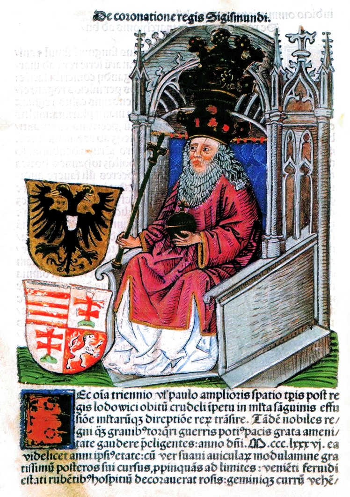

Luxemburgi Zsigmond
Élete- Luxemburgi Zsigmond, németül: Sigismund von Luxemburg (Prága, 1368. február 14. – Znaim, 1437. december 9.) magyar, német és cseh király, német-római császár, a késő középkori Európa egyik legjelentősebb személyisége, a hercegi birtokáról elnevezett német eredetű Luxemburgi-ház tagja. - Nevéhez fűződik az utolsó összeurópai keresztes hadjárat megszervezése (1396), a nagy nyugati egyházszakadás felszámolása (1417) és a huszitizmus elleni harc megkezdése. Magyarországon 1395-ig első feleségével, Nagy Lajos király leányával, Máriával együtt ült a királyi trónon. Magyar királyként elsősorban Dalmácia elvesztésével, fényes visegrádi, budai és székesfehérvári építkezéseivel, illetve az Oszmán Birodalommal szembeni defenzívába vonulással, a végvárrendszer kiépítésével, valamint törvényeinek előremutató jellegével írta be magát a történelembe. Fiúörökös hiányában királyságaiban utódjául lánya férjét, a tehetséges Habsburg Albertet jelölte meg. Több mint ötven évig viselte a magyar koronát, ezzel a magyar történelem második leghosszabb ideig regnáló uralkodója. Zsigmondot és címereit ábrázoló lap Thuróczi János krónikájában Trónra kerülése- Amikor Nagy Lajos meghalt, vele meghalt a magyar Anjou-ház utolsó férfisarja, ezért a két lánya, Hedvig és Mária örökölte a trónt. Hedvig a bárók akarata szerint Lengyelország uralkodója lett, Mária pedig Magyarország királynője, s ezzel megszűnt a két ország perszonáluniója. Szinte azonnal megindult a verseny Mária kezéért, hiszen aki a férje lesz, az lesz Magyarország uralkodója. - A bárók három pártba tömörültek, és mind a három pártnak megvolt a maga jelöltje. A Lackfiak Mária vőlegényét, Luxemburgi Zsigmondot (IV. Károly német-római császár fiát, Vencel német és cseh király fivérét) támogatták. A Garaiak, Garai Miklós nádor és Erzsébet anyakirályné jelöltje Lajos orléans-i herceg (V. Károly francia király gyermeke és VI. (Őrült) Károly fivére) volt; Lajos és Mária diplomáciai úton házasságot is kötött. A délvidéki Horváti család II. Anjou vagy Kis Károly nápolyi királyt akarta a trónra, és 1385-ben meg is koronázták. 40 napig uralkodott, majd Garai nádor és Erzsébet megölette. Zsigmond még Kis Károly koronázása előtt Csehországba menekült. - A Horváti testvérek összefogtak a királynő és édesanyja ellen, és 1386-ban a nádorral együtt elfogták őket. A nádort, aki hősiesen küzdött, lekaszabolták, majd lefejezték, az anyakirálynőt és lányát Novigrad várába zárták. A bárók így jobb híján Zsigmond mögé sorakoztak fel, mivel ő 1385-ben már feleségül vette Máriát. Zsigmondot 1387-ben királlyá koronázták. - sigmond a trónért egyezséget („ligát”) kötött bizonyos báró csoportokkal, mert a megcsappant királyi hatalom már nem tette lehetővé, hogy mindenkitől függetlenül politizáljon. Az egyezség értelmében a nádor pedig Lackfi István lett. Zsigmond ugyan elnyerte a koronát, de kénytelen volt együttműködni a ligával, kielégíteni a bárók területi igényeit. Az Anjou-kor elején helyreállított várbirtok rendszer összeomlott, mert Zsigmond a királyi birtokok felét eladományozta. Nagy Lajos halálakor a király még az ország háromszáz vára közül 160-nak volt az ura, Zsigmond uralma alatt ez a szám 70-re csökkent. Ekkor kezdtek kialakulni a hatalmas mágnás vagyonok. |
|---|
![[Kép]](https://upload.wikimedia.org/wikipedia/commons/a/a7/Zsigmond_Thuroczy.jpg){kind=link}